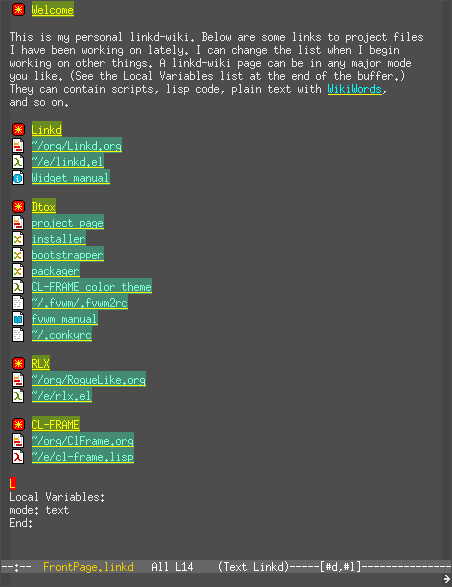
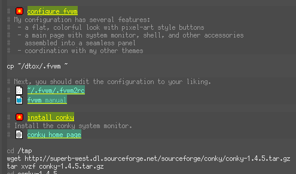
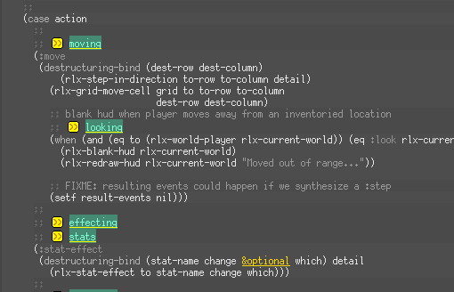
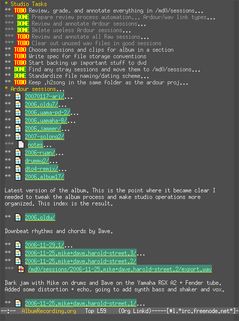
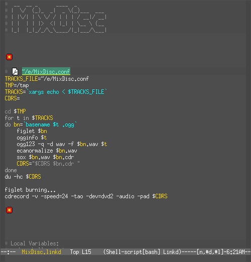

linkd
This is an obsolete page.
This code is being merged into Eon. Visit that page instead.
Description
linkd-mode is a system for recognizing special s-expressions in all kinds of text files, and causing these "lisp hot spots" to become interactive when viewed within GNU Emacs. Several different activities are supported. The user may:
- Embed hypermedia links in any kind of text file. Follow the links and navigate his/her own heterogeneous file web. Files can be in any major mode.
- Delimit and name regions of text called "blocks" in any type of text file.
- Send blocks to other programs (i.e. bash) for processing
- Identify concepts with "tags" and navigate to related code
- Optionally use icons so that links can be distinguished from each other by color and shape

linkd-mode is not another publishing mode or personal information management system. Instead it is designed to be used alongside the modes of your choice. Download links, instructions, and more screenshots are below.
Quite soon, linkd-mode will:
- Search and index blocks.
- Analyze and summarize links between blocks.
- Manufacture links related to the current context (a la remember-annotations.)
- Unify the linking schemes used by different emacs packages (for example, eev, planner, howm, org)
Acknowledgements
In designing linkd-mode I have drawn on EevMode and HowmMode, among other things. Special thanks to Eduardo Ochs for writing eev and for many years of fruitful discussions, to Richard Stallman for feedback and suggestions regarding golisp-mode, and to Michael Olson for coming up with the name and contributing ideas.
Status
I have made an early alpha release. Instructions follow.
Installation and configuration
NOTE: Linkd requires Emacs 22.
Download linkd.el and put it in your load-path. Then add
(require 'linkd)
to your emacs initialization file, and execute the sexp with C-x C-e.
If you want cool graphical icons, download the icon collection and unpack it in some suitable folder. Then add the following to your emacs initialization file:
(setq linkd-use-icons t) (setq linkd-icons-directory "~/.linkd-icons") ;; or wherever you put it
You can set up linkd-mode to turn on automatically whenever you enter certain major modes. Here is an example that causes linkd-mode to activate whenever you open an Emacs Lisp, Common Lisp, shell-script, or text-mode file:
(add-hook 'emacs-lisp-mode-hook 'linkd-mode) (add-hook 'lisp-mode-hook 'linkd-mode) (add-hook 'sh-mode-hook 'linkd-mode) (add-hook 'text-mode-hook 'linkd-mode)
Linkd-mode's keybindings follow the standard conventions for minor modes: C-c followed by one of a set of reserved punctuation characters. For speed, I rebind some of them as follows:
(global-set-key [(control \&)] 'linkd-follow-on-this-line) (global-set-key [(control f3)] 'linkd-process-block) (global-set-key (kbd "M-[") 'linkd-previous-link) (global-set-key (kbd "M-]") 'linkd-next-link) (global-set-key (kbd "M-RET") 'linkd-follow-at-point)
Usage
To use the features of linkd, you must turn on linkd-mode by issuing the command M-x linkd-mode RET. This will fontify the links and establish key bindings for linkd-mode's commands.
Basics of links
Links look like this:
(@file :file-name "/etc/fstab" :display "File System Table")
or sometimes just
(@> "font locking")
They are typically embedded in the comments of source code files or configuration files.
Here are a few examples:
(@file :file-name "/etc/fstab") (@file :file-name "~/e/dtox.e" :to "ardour2") (@file :file-name "~/e/rlx.el") (@file :file-name "~/org/RogueLike.org" :to "* Tasks") (@file :file-name "~/e/cl-frame.lisp") (@man :page "fvwm" :to "ButtonStyle") (@> "font locking") (@man :page "conky") (@file :file-name "~/org/KarmaPod.org") (@info :file-name "elisp" :node "Display Property")
Try typing a few into a scratch buffer where linkd-mode is turned on. The moment you type the closing parenthesis, the link should fontify (and display an icon, if you have icons turned on.)
To follow a link, place point on the link and press C-c '*. This runs the command *(linkd-follow-at-point). If there is only one link on that line, you can just place point anywhere in the line and press C-c {period} to run the command (linkd-follow-on-this-line).
To edit a link, put point at the end of the link, and press backspace to delete the closing parenthesis—the link will turn back into plain text.
Of course, you don't actually have to insert and edit links manually. It's cumbersome and in most cases unnecessary. See the section "Creating and editing links" below.
Blocks and stars
Certain special links delimit regions of a file. These regions are called blocks and the delimiters are called stars. A block looks like this:
(@* "block name") ... ... content of block ... (@*)
The key C-c {asterisk} executes the command (linkd-process-block), which triggers an action on the block containing point. The action taken is controlled by the buffer-local variable linkd-process-block-function, whose value is the function that processes the block. An example of this is below in the section "Example Usages."
Tags
Tags are special links that may appear multiple times in a file. They look like this:
(@> "topic name")
Following a tag navigates the next instance of the tag with the same name. Repeatedly hitting *C-c '* will cycle through all instances of the tag in the file, also stopping at any blocks with the same name.
Creating and editing links
There are several commands to insert new links. For most links you can use C-c {comma} {comma}. This runs the command (linkd-insert-link)
For stars and tags, you can use C-c , s (linkd-insert-star) and C-c , t (linkd-insert-tag) respectively.
You can interactively edit a link with C-c , e which runs the command (linkd-edit-link-at-point).
If you use these functions to create and edit links, you can effectively ignore the link syntax.
TODO Handling files your way
Examples
An interactive self-documenting installer script
My other project DTOX revolves around an interactive installation/configuration script. It is a bash script split into named blocks by linkd stars. The blocks contain commentary and active links to related documentation and configuration files.

The local variables in the script set linkd-process-block-function to the value linkd-send-block-to-shell, which pops up an emacs shell window to execute the commands in the block.
So the user can inspect the blocks, edit them if necessary, choose which blocks are to be executed, and watch the output of the commands. The user may also follow the links to learn more, or to tweak a configuration file after it has been installed.
Concept-oriented navigation in lisp source code
When writing a program, I often want to jump to related pieces of code. But I usually don't just want to jump to a function definition from one of its callers—more often I want to find pieces of code that are related in some more abstract sense.
I use linkd-mode's tags and stars to relate pieces of code to one another and to navigate through related code. First I gather related functions and variables and put them in their own block, and name the block after the concept they embody. (Remember that stars are used to delimit and name blocks.) If I am writing an object-oriented program with CLOS, I will usually put a class and most of its methods in one block.
Then I place tags wherever a piece of code is related to the block in some sense. You can think of following a link as jumping between related ideas, because it will move point to the next tag or star with the same concept name (and back to the first when you reach the end of the file.)

I use linkd-mode to organize my lisp programs, be they 50 lines or 5,000. If you'd like to try out such a file with linkd-mode, you can download rlx.el (part of the RLX Project) and follow the links in the file. There is even an index of program concepts that one can use to get an overview of the program's structure.
I also insert links to pages of relevant documentation—for example the Emacs Lisp Manual or the ANSI Common Lisp Standard.
Creating a wiki-like personal "hyperweb"
- This section is under construction, as is the functionality described.
Many people use wikis as personal notebooks. They organize their knowledge, develop ideas, and keep web bookmarks in their wikis. With linkd-mode, any text file on your system can be a wiki page, including system configuration files. Wiki pages can link to any kind of resource, not just other pages. They can be in any major-mode you choose. And your wiki pages can contain interactive scripts (see the section about DTOX above.)
First you should create a directory called ~/linkd-wiki (or set linkd-wiki-directory to your preferred location.) This is the default location for new wiki pages.
For fast access, I set a global key that navigates instantly to the wiki's FrontPage:
(global-set-key [(meta f8)] '(lambda () (interactive)
(linkd-wiki-find-page "FrontPage")))
You can use C-c , w to create a link to a wiki page.
Indexing and annotating a library of audio recordings
I run a small recording studio and have been working on an experimental album with my musician friends. Over the last few years we have built up a large library of recordings. It became very difficult to organize the various files in preparation for compiling an album. In addition, we made detailed plans for the recording of new works, so we needed a tool to organize our ideas.
I decided to use linkd-mode along with my favorite outliner/todo-list, the popular OrgMode.

I created an index of all our Ardour2 sessions with comments and notes for further work. I am also adding links to mixdown wave files so that you can listen to sessions at a glance. Org-mode's outline visibility cycling allows us to quickly get an overview of our music library, and use keywords to find particular songs (especially those that don't have titles.)
With linkd-file-handler-alist set up as follows, I use linkd-mode to launch Ardour and Snd:
(setq linkd-file-handler-alist `(("wav" . ,(lambda (file)
(shell-command (format "snd %s &" file nil nil))))
("ardour" . ,(lambda (file)
(shell-command (format "ardour2 %s &" file nil nil))))))
TODO Making mixdiscs out of Ogg Vorbis files
Here is an example using embedded shell scripts to make mixdiscs for my friends.

Tasks
TODO Backlog
TODO Fix bizarre void function problem when saving
TODO Fix eaten RETs messing up links at end of lines
TODO Fix interactive edit bug in linkd
TODO Fix inability to RET through multiple links in some files
TODO Fix mouse binding issue
TODO Look at how org-mode implements freaky links
TODO Calendar integration
DONE Single key actions
TODO Docstrings
TODO Rethink wiki stuff
DONE Fix parenthesis-in-link-text problems
DONE Review linkd-related emails and respond
TODO New icon for datablock sexps
TODO Cleaner navigation in/out of datablocks
TODO Embedded cell mini-mode
DONE Easily move cursor in and out of cell sheet
TODO Paintbox
DONE Embedded data blocks
TODO Manufacture links based on context
TODO Docstrings for minor mode, etc
TODO Defcustoms
TODO -——— BETA RELEASE 1 –—————
TODO Fix compilation warnings
TODO Star region should be composed of whole lines
TODO Review documentation and document new stuff
TODO Index blocks
TODO Make links re-fontify when yanking
TODO General link history
TODO Completion on file names when inserting file link
TODO Fix M-RET keybinding in org-mode buffers
TODO Configure auto-insert-mode with .linkd template
TODO C-u linkd-follow
TODO Reformat manual into Texinfo mode
TODO Link type definition shortcuts
TODO linkd-wikiword-map-functions
TODO Versioned release for mwolson
TODO Integrate with etags
TODO Use thing-at-point to properly fontify sexps-within-sexps?
TODO Implicit links
TODO Icons for Makefile, fstab, etc
TODO Icon for directory
TODO More link types
TODO Search blocks
TODO Header line effects for status
TODO Analyze and summarize links
TODO — Documentation and cleanup
DONE Icon bullets to identify resource type.
DONE Basic set of file link types
DONE Make a follow hotkey
DONE Fontify the links
DONE Fancier fontification
TODO RANDOM STUFF
DONE Install http://tromey.com/elpa/install.html
TODO Develop simple "plaintext" markup for use within linkd comments
TODO Convert my files to this markup
TODO Change exporters to use markup
TODO linkd-ify and then tex-ify my .emacs into an essay.
DONE look at http://www.emacswiki.org/cgi-bin/wiki.pl?Htmlize
DONE linkd–>html prettyprinter based on htmlize
- htmlize-before-hook htmlize-after-hook